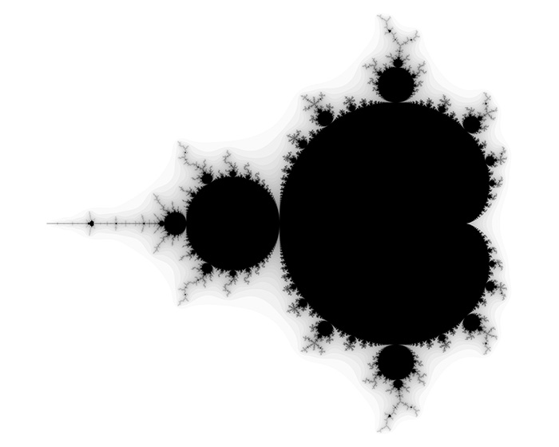

Get Started in Markdown
Here we will see how we can make a Mandelbrot set plot with python code.
Important
This exercise focuses on intermediate level python users who feel comfortable using numpy and complex numbers
MandelBrot set
The Mandelbrot set is a beautiful fractal and is defined as the set of complex numbers \(c\) for which the sequence \(z_{n+1} = z_n^2 + c\) does not diverge when iterated from \(z=0\), i.e., for which the sequence \(|z_n|\) remains bounded in value.

Full Code
import numpy as np
import matplotlib.pyplot as plt
def mandelbrot(c, max_iter) -> int:
"""
Computes the number of iterations required for the complex number c to escape the Mandelbrot set.
Args:
c (complex): The complex number to test.
max_iter (int): The maximum number of iterations to perform.
Returns:
int: The number of iterations required for c to escape the Mandelbrot set, or 0 if it does not escape within max_iter iterations.
"""
z = 0
n = 0
while abs(z) <= 2 and n < max_iter:
z = z*z + c
n += 1
if n == max_iter:
return 0
else:
return n
def mandelbrot_set(xmin, xmax, ymin, ymax, width, height, max_iter) -> tuple:
"""
Computes the Mandelbrot set for a given range of complex plane coordinates.
Args:
xmin (float): The minimum value of the x-axis.
xmax (float): The maximum value of the x-axis.
ymin (float): The minimum value of the y-axis.
ymax (float): The maximum value of the y-axis.
width (int): The number of pixels in the x-axis.
height (int): The number of pixels in the y-axis.
max_iter (int): The maximum number of iterations to compute the Mandelbrot set.
Returns:
tuple: A tuple containing the x-axis values, y-axis values, and the computed pixels.
"""
x = np.linspace(xmin, xmax, width)
y = np.linspace(ymin, ymax, height)
pixels = np.zeros((height, width))
for i in range(height):
for j in range(width):
pixels[i, j] = mandelbrot(x[j] + 1j*y[i], max_iter)
return (x, y, pixels)
def plot_mandelbrot(x, y, pixels) -> None:
"""
Plots the Mandelbrot set using the given pixel values.
Args:
x (numpy.ndarray): Array of x-coordinates.
y (numpy.ndarray): Array of y-coordinates.
pixels (numpy.ndarray): Array of pixel values.
Returns:
None
"""
plt.imshow(pixels.T, cmap='hot', extent=(y.min(), y.max(), x.min(), x.max()))
plt.xlabel('Real')
plt.ylabel('Imaginary')
plt.show()
# Example usage
def main():
xmin, xmax = -2, 1
ymin, ymax = -1.5, 1.5
width, height = 1000, 1000
max_iter = 100
x, y, pixels = mandelbrot_set(xmin, xmax, ymin, ymax, width, height, max_iter)
plot_mandelbrot(x, y, pixels)
if __name__ == '__main__':
main()
Code Explanation
Hyperlink test
Please see src.mandelbrot.mandelbrot()
Autofunction test
.. py:function:: mandelbrot(c, max_iter) -> int :noindex: :module: src.mandelbrot
Computes the number of iterations required for the complex number c to escape the Mandelbrot set.
Args: c (complex): The complex number to test. max_iter (int): The maximum number of iterations to perform.
Returns: int: The number of iterations required for c to escape the Mandelbrot set, or 0 if it does not escape within max_iter iterations.